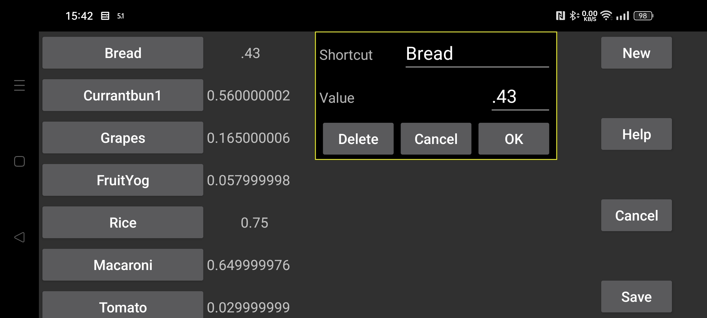

ar be de es fr hi it ja nl pl pt ru tr uk uz zh en
Быстрые команды можно использовать в Kerfstok.
На экране ввода чисел на часах можно перейти к экрану быстрых команд, например на Vivoactive 3 — свайпом влево. Там показан список меток; нажатие на одну из них вставляет соответствующее значение на экран ввода числа. Значения могут быть числами или арифметическими операторами вместе с числами, например *0.5 для умножения на 0.5.
В этом меню настроек можно создавать, удалять и изменять быстрые команды.
Список существующих быстрых команд находится слева. После касания одной из них появляется экран, где можно удалить команду или изменить ее метку либо значение.
Новая быстрая команда создается кнопкой Новая.
Изменения сохраняются только после нажатия кнопки Сохранить.